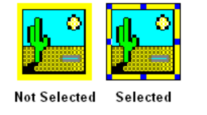
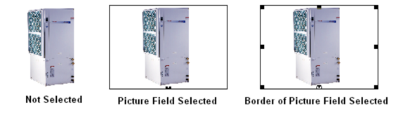

Working with PicturesProposal Maker Main Topics (List) Proposal Maker Menus (List) |
  
|
Proposal Maker Main Topics (List) Proposal Maker Menus (List)
Working with PicturesProposal Maker Main Topics (List) Proposal Maker Menus (List) |
|
A picture on the document can either be native or a picture field, and it can either be in the "move with text" mode or the "fixed position on page" mode.
Native Pictures
A native picture is one that has been inserted with the "Insert | Picture" menu, or by pasting in a picture that you copied to the clipboard from another application. When you click on a native picture to select it, the picture immediately shows a thin black outline with eight square grab handles around the perimeter.

Picture Fields
A picture field is a picture that is linked to the data in the current Energy Audit or Rhvac project, and that has properties that show up in the Field Properties window. When you click on a picture field to select it, it shows a think black outline that does not include the eight grab handles. You must click on the thin black outline itself in order to see the eight grab handles (but that isn't necessary in order to move or resize the picture field, if you click on the border in the right place for those operations). You must click on the picture field itself (not the border) in order to set its properties in the Field Properties window. You must right click on the border itself to have access to the Object Attributes dialog, which lets you change the mode of the picture field from "move with text" to "fixed position on page," or vice-versa.

Moving and Sizing Native Pictures and Picture Fields
To move a native picture, click on the picture itself and drag it where you want it to go (if its mode is "move with text" you will only be able to move it where there is already text on the document). To move a picture field, click on its border (away from any of the eight grab handles), and drag it. To resize either one, simply click and drag on one of the eight grab handles.
Miscellaneous
You cannot insert a picture field inside a text frame, but you can insert a native picture ("move with text" only) into one.